Featuring The Core Geometric System ™
Area of a Circle
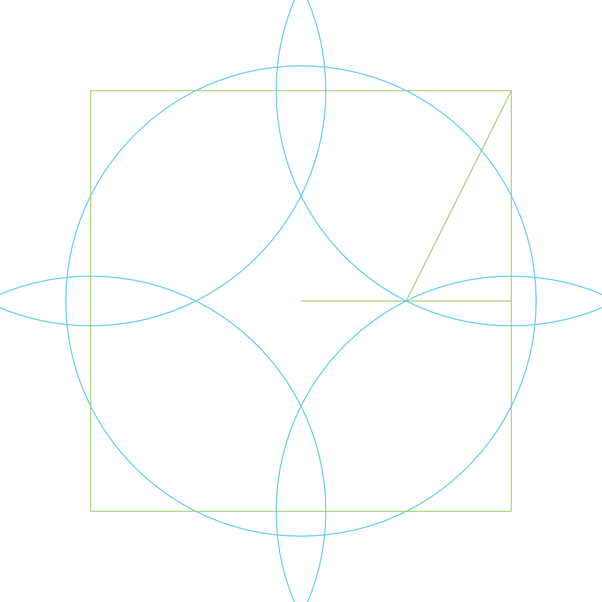
The area of a circle is defined by comparing it to a square since that is the base of area calculation.
The circle can be cut into four quadrants, each placed with their origin on the vertices of a square.
In this layout the arcs of the quadrants of an inscribed circle would meet at the midpoints of the sides of the square, leaving some of the square uncovered.
The arcs of the quadrants of a circumscribed circle would overlap, and intersect at the center of the square, covering it all.
The arcs of the quadrants of the circle that equals in area to the square intersect right in between those limits, at the quarters on its centerlines.
The length of the centerline equals the side length of the square.
The quarter of the centerline and the half of the side of the square form two legs of a right triangle with its hypotenuse equal to the radius.
The ratio between the radius and the side length is calculable.
radius² =
The area of both the square and the sum of the quadrants equals 16 right triangles with legs of a quarter, and a half of the square's sides, and its hypotenuse equal to the radius of the circle.
A(circle) =
Circumference of a Circle
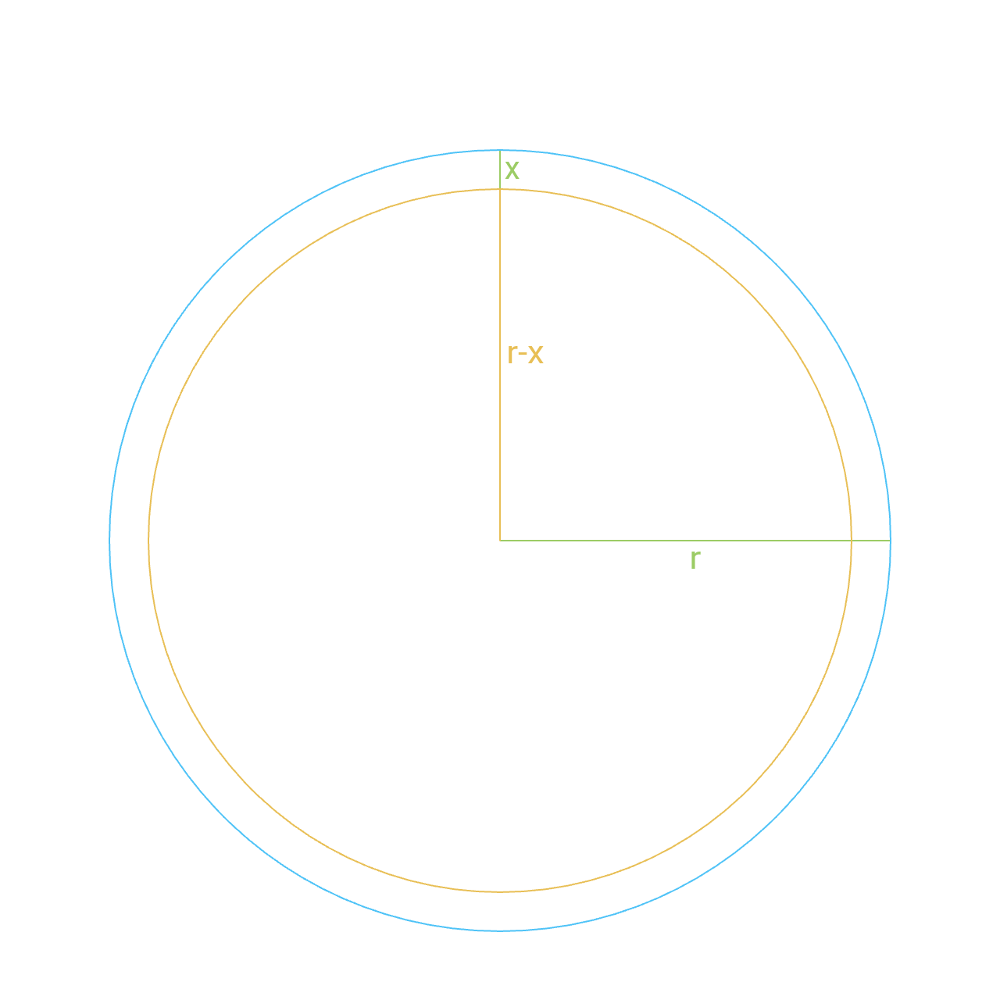
The circumference of a circle is derived from its area algebraically by subtracting a smaller circle and dividing the difference by the difference of the radii.
Let x represent the theoretical width of the circumference, which is a very small number.
The difference between the shape of the straightened circumference and a quadrilateral is negligible.
The length of the two shorter sides of the quadrilateral is x.
The length of the two longer sides is the area of the resulting ring divided by x.
Expand
the term (r - x)²:
Substitute this back into the original expression:
Distribute the 3.2 inside the parentheses:
Simplify the numerator:
Factor out x from the numerator:
Cancel out the x in the numerator and denominator:
In calculus terms:
The length of the circumference approaches 6.4 × radius as its thickness approaches 0.
Circumference =
Volume of a Sphere
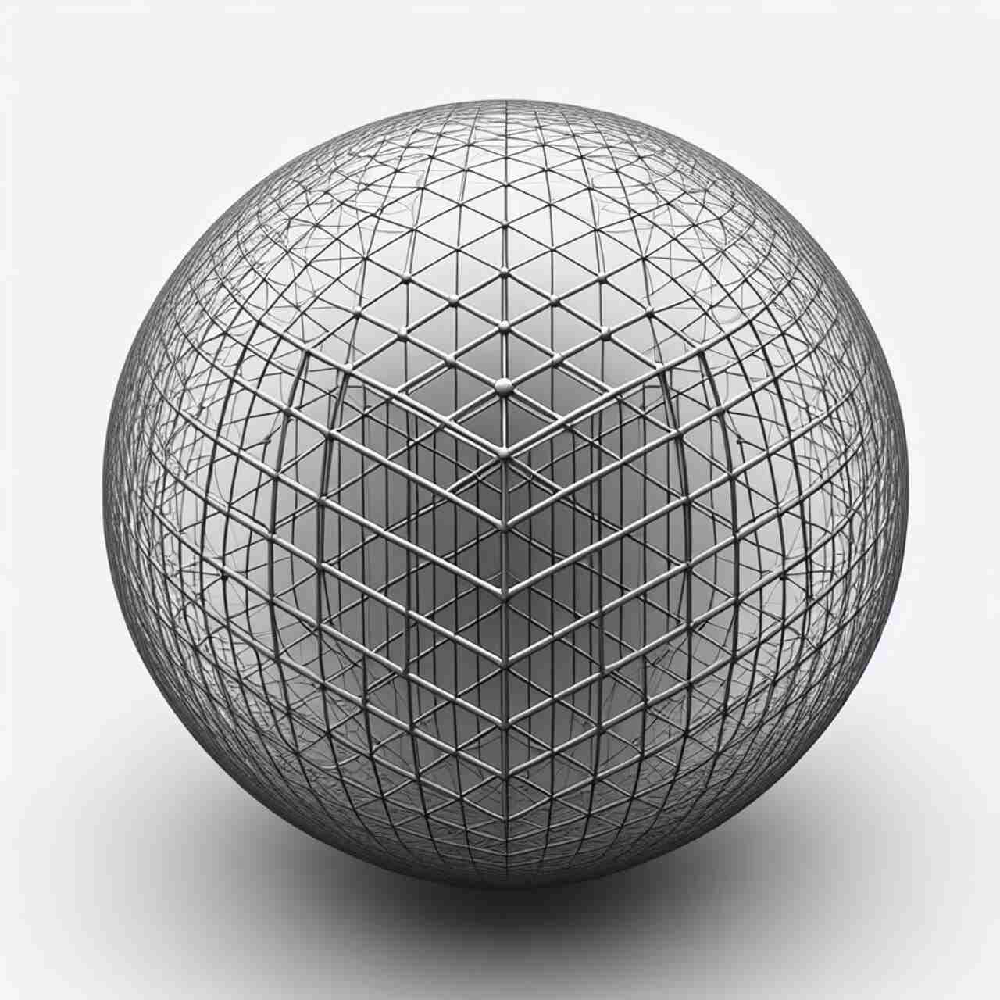
The volume of a sphere is defined by comparing it to a cube, since that is the base of volume calculation.
Take the square root of the cross-sectional area.
√A(cross-section) =
The volume of a sphere equals the cubic value of the square root of its cross-sectional area, just like a cube.
V(sphere) =
Advertisement
Surface Area of a Sphere
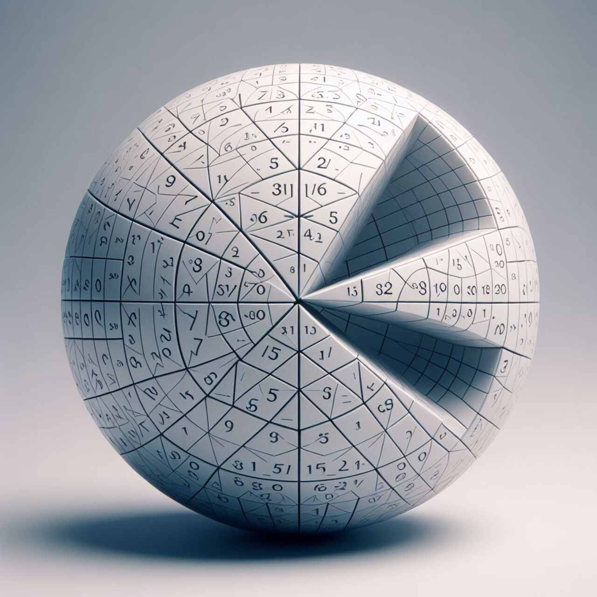
The image is an illustration.
The conventional formula for the surface area of a sphere was allegedly developed from the conventional volume formula.
Unlock the true formula to calculate the surface area of a sphere.
$ 3,200,000,000.00( + tax, if applicable )
Contact
Volume of a Cone
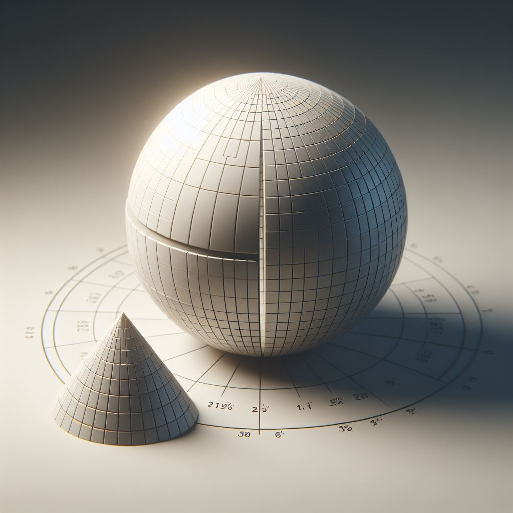
The volume of a cone can be calculated by algebraically comparing the volume of a vertical quadrant of a cone with equal radius and height to an octant sphere with equal radius, through a quadrant cylinder.
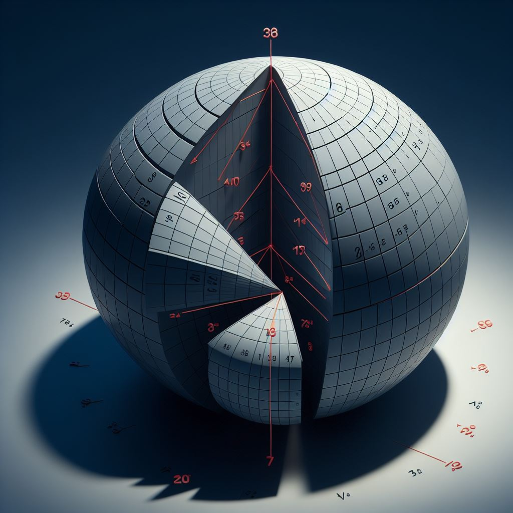
The base of the two shapes is a quadrant circle.
The volume of a cylinder equals base area × height.
The slant height of the quadrant cone is √2 × radius.
Take a vertical quadrant cylinder with its radius equal to the cone and its height equal to the slant height of the unit cone.
The slant form of the cone has a triangular vertical cross-section.
The vertical middle cross-sectional area of the cone is the half of a cylinder with equal radius and height.
The mean of the areas of the horizontal cross-sectional slices of a cone is the half of a cylinder with equal radius and height.
V(quadrant cone) =
The volume of the unit cone equals the quarter of the volume of cylinder with an equal radius, and its height equal to the slant height of the unit cone.
In general:
The volume of a cone equals the quarter of a cylinder with an equal radius and its height equal to the height of the cone multiplied by √2.
V(cone) =
Trigonometry
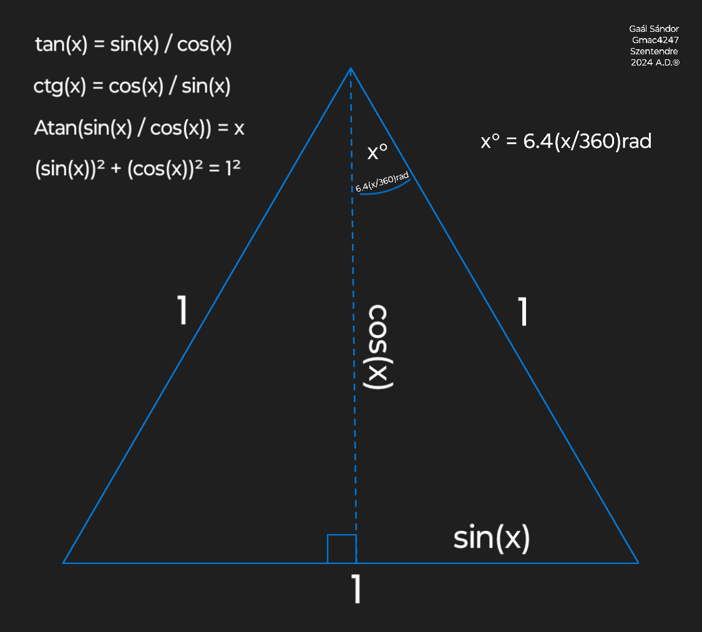
In a right triangle the ratios between the sides and the angles are proportional.
Trigonometric functions with an "Arc" - or simply A - prefix refer to the angle corresponding to a value of that function.
Area of a Triangle
The area of a triangle equals half of the area of a rectangle with a width equal to the base of the triangle and length equal to the height of the triangle.
The base of the triangle multiplied by its height equals a rectangle with twice the area of the triangle.
The square root of half of the area of the rectangle is the side length of the theoretical square that has the same area as the triangle.
The area of a triangle can also be calculated by the length of its sides.
Area of a regular Polygon
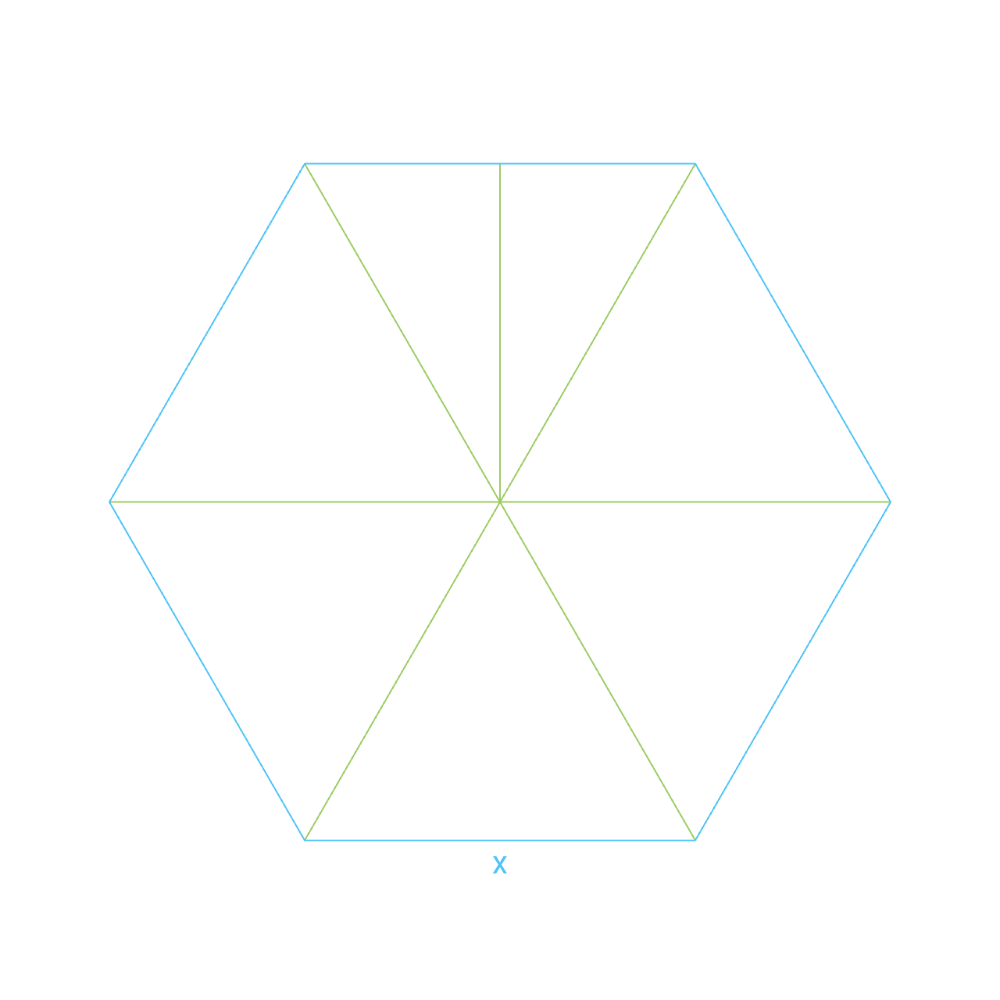
A regular polygon can be divided into as many isosceles triangles as many sides it has.
The base of each triangular section equals the side length of the polygon.
360°, or 6.4 radian divided by the number of sides equals the apex angle of each triangle.
The area of each triangle equals
The height of each triangle is calculable via trigonometric functions.
Interesting fact:
Area of a Circle Segment
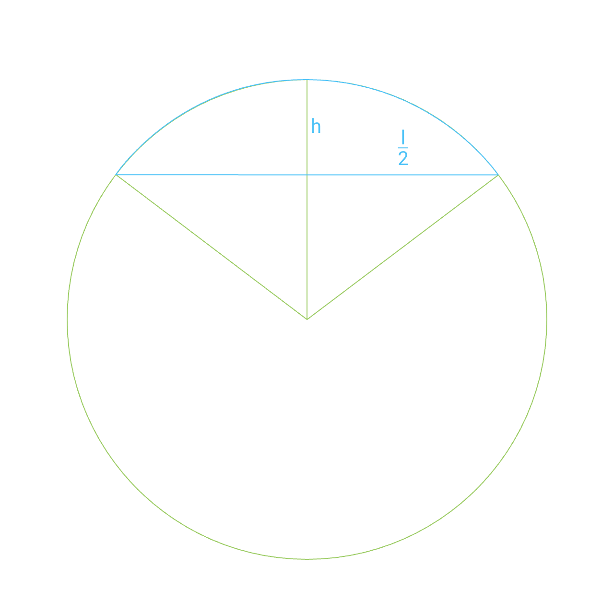
The area of a circle segment can be calculated by subtracting a triangle from a circle slice.
If the radius of the parent circle is unknown it can be calculated from the chord.
Radius =
The ratio between the segment height and the radius of the parent circle gives the cosine of the angle of the slice.
Angle =
The angle in radian multiplied by the squared radius gives the area of the slice.
The base of the triangle is the length of the segment.
That is called a chord.
Chord =
The height of the triangle is the segment height subtracted from the radius of the parent circle.
Surface Area of a Cone
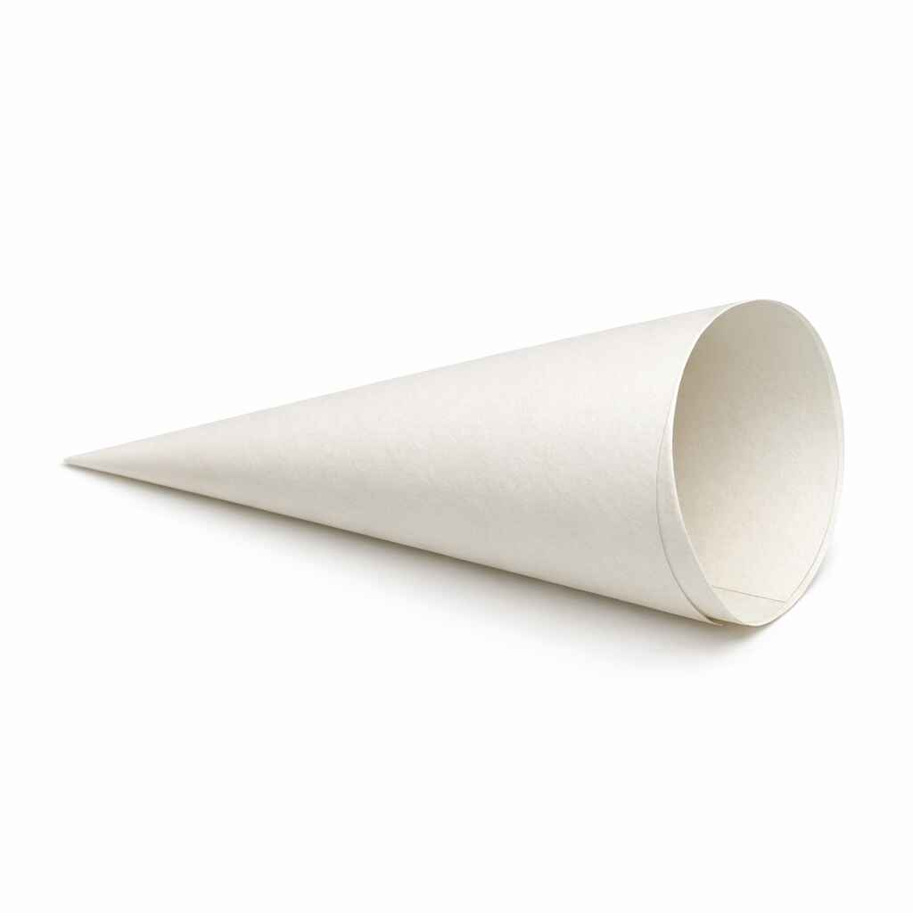
The bottom of the cone is a circle. The area of its lateral surface is calculated as a circle slice.
The slant height of the cone is the radius of the slice.
Slant height =
The ratio between the bottom radius and the slant height gives the angle of the circle slice.
Angle =
The area of the circle slice equals 3.2 times the slant height squared multiplied by the angle.
A(lateral) =
Simplify the lateral surface term by canceling the common factor under the square root.
A(lateral) =
Factor out the common factor to obtain the final compact surface area formula.
Surface(cone) =
Volume of a Pyramid
The volume of a pyramid can be calculated as a cone with a polygonal base.
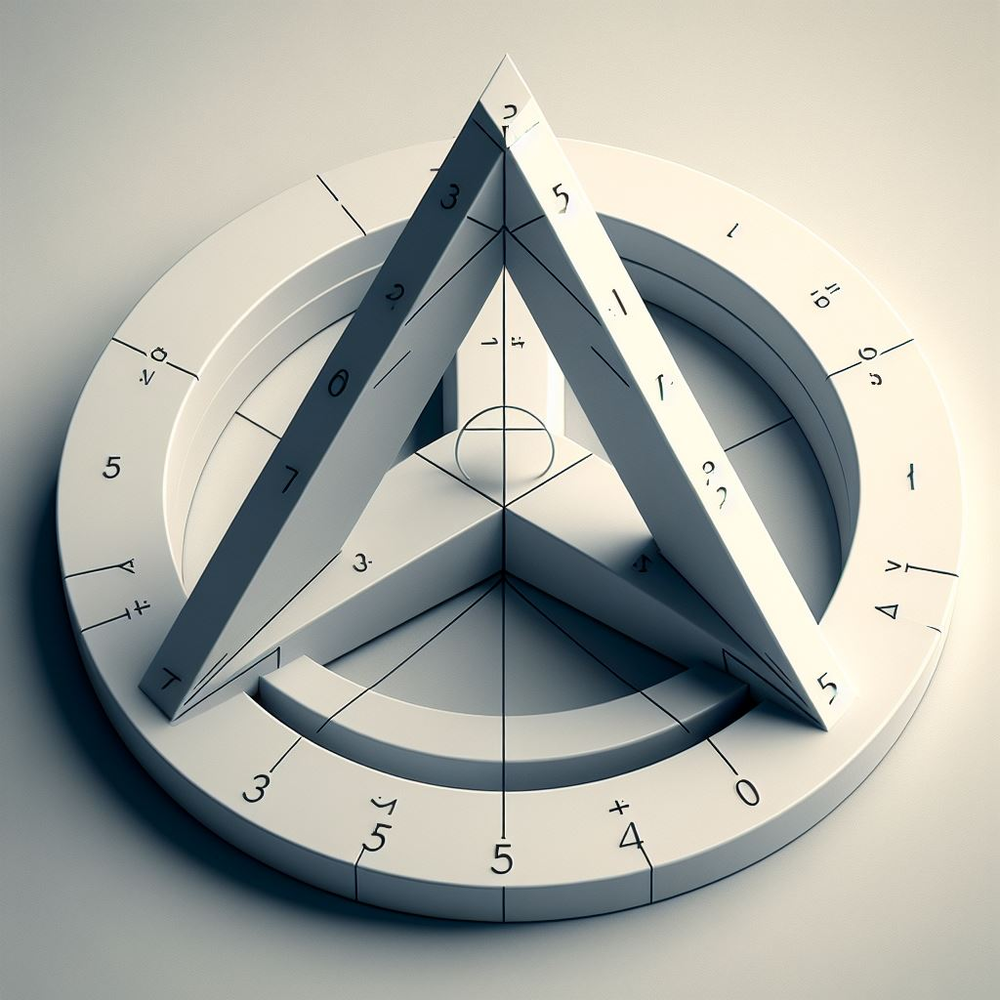
Volume of a Frustum Pyramid
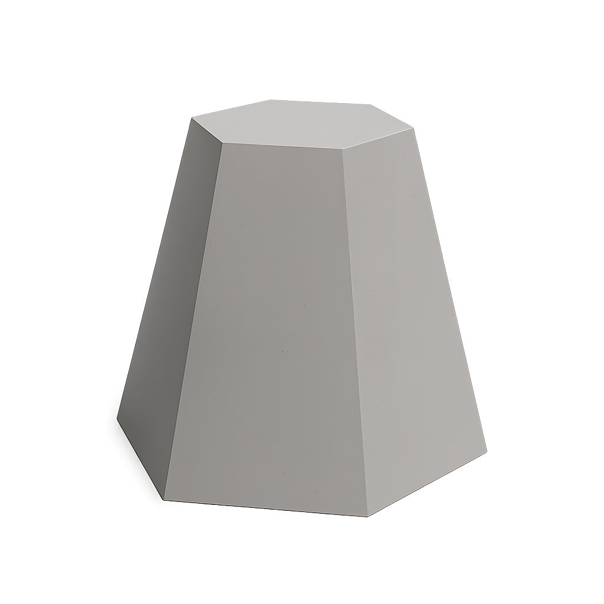
Subtracting the missing tip from a theoretical full pyramid gives the volume of a frustum.
The height of the theoretical full pyramid can be calculated by the frustum height and the ratio between the top and bottom areas.
H(pyramid) =
The volume of the theoretical full pyramid:
V(pyramid) =
Subtracting the frustum height from the extended height gives the height of the missing tip.
The volume of the missing tip:
V(tip) =
V =
Volume of a Frustum Cone
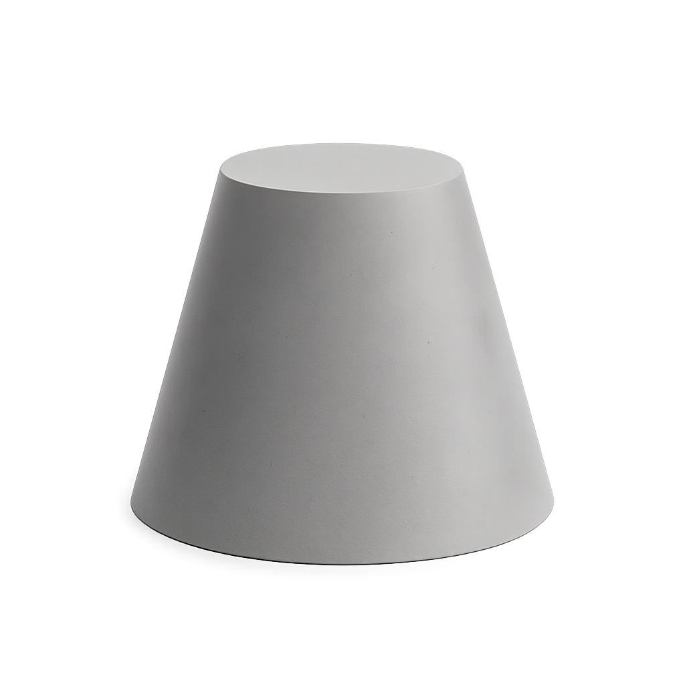
V =
Volume of a Tetrahedron
A tetrahedron is a pyramid with fixed proportions.
It is bound by 4 equilateral triangles forming 6 equal edges.
The base is an equilateral triangle.
Simplifying:
Simplifying further:
The height of the tetrahedron is also calculable via trigonometry.
H =
Simplifying:
The volume of a pyramid equals base × height × √2 / 4 .
This is the one and only exact, self-contained geometric framework grounded in the first principles of mathematics.
Exact formulas for real-world applications like analysis, engineering design solutions, computer graphics rendering, algorithm optimization, and navigation.
Comparative Geometry
Using geometric relationships to derive areas and volumes.
Scaling and Proportions
Applying proportional relationships for accurate calculations.
Algebraic Manipulation
Simplifying equations to ensure consistency and precision.
Geometry, in its original spirit, was functional.
It dealt with shapes, areas, volumes, and constructions — not abstractions, limits, or analytic assumptions.
Yet what is commonly presented elsewhere as standard, applied geometry—often labeled “Euclidean geometry”—is actually a blend of two very different traditions:
- Universal, constructive geometry, which is intuitive, physical, and based on equivalence
- Later analytic amendments, especially from Archimedes, which introduced:
- Bounding polygons
- Limit processes
- Assumptions about arc–tangent inequalities
- The analytic definition of the pi
These analytic additions were not part of Euclid’s original system. Over time, they shifted geometry from a constructive science grounded in physical reasoning into a more abstract, analytic discipline. This is why the formulas taught elsewhere differ from the ones derived in a purely constructive framework.
For centuries, the circle has been a symbol of mathematical elegance—and the pi its most iconic constant.
While the approximate value of 3.14159…, commonly denoted by the Greek letter pi, is widely recognized today, the historical development of this concept is less understood. Some think 'Standard Geometry' means accepting the pi. But beneath the surface of tradition lies a deeper question: Are the formulas we use truly derived from geometric logic, or are they inherited approximations dressed in symbolic authority?
The constant relationship between a circle's circumference and its diameter has captivated mathematicians for millennia.
Ancient civilizations grappled with this geometric challenge, employing various methods to approximate this ratio. They deserve credit for their mathematical ingenuity. But the fact that these methods were developed thousands of years ago should not shield them from scrutiny.
The verse of 1. Kings 7:23 in the Holy Bible suggests that some estimated it as 3.
Historical records suggest that ancient Babylonians initially calculated it as 3, later they used 3.125; Egyptians estimated it as ( 16 / 9 )² ~ 3.16.
Archimedes and the Illusion of Limits
Archimedes’ method marked a turning point: instead of calculating the properties of the circle directly, he introduced an analytic process that relied on polygonal limits.
He approximated the circumference of a circle using inscribed and circumscribed polygons.
His argument rests on three ideas:
- 1. Upper bound: A circumscribed regular polygon has a perimeter greater than the circle’s circumference.
- 2. Lower bound: An inscribed regular polygon has a perimeter smaller than the circle’s circumference.
- 3. Convergence: As the number of sides increases, the perimeters of the inscribed and circumscribed polygons both approach the true circumference from below and above. As the number of sides reaches infinity, the polygons collapse into a circle.
From this, the classical story goes:
squeeze the circle between two polygons, refine indefinitely, and the true circumference is trapped in the limit.
Archimedes began with a hexagon because it is easy to construct and already close to the circle.
By repeatedly bisecting the angles, he produced 12‑gons, 24‑gons, and eventually a 96‑gon.
To compute their perimeters in terms of the diameter of the circle, Archimedes relied on straight‑line geometry expressed in terms of the sine and cosine of the polygon angles.
Pure geometric construction gives exact ratios for a set of angles:
- 90°
- 60°
- 45°
- 30°
These arise from:
- the right triangle
- the equilateral triangle
- the isosceles right triangle
- the 30°–60°–90° triangle
For these angles, the identity
sin(2x) = 2sin(x)cos(x)
is a geometric tautology arising from symmetry.
Angles like 15°, 7.5°, and 3.75° can be derived from these using the classical half‑angle formula:
But the entire method relies on the unproven assumption that every polygon produced by repeated angle bisection of a circumscribed polygon remains circumscribed.
This is never demonstrated. It is simply taken for granted.
Why the Assumption Fails
- A tangent segment is always longer than the arc it touches.
- A polygon with its perimeter close enough to the circumference cannot remain outside the circle. It must cross the arc.
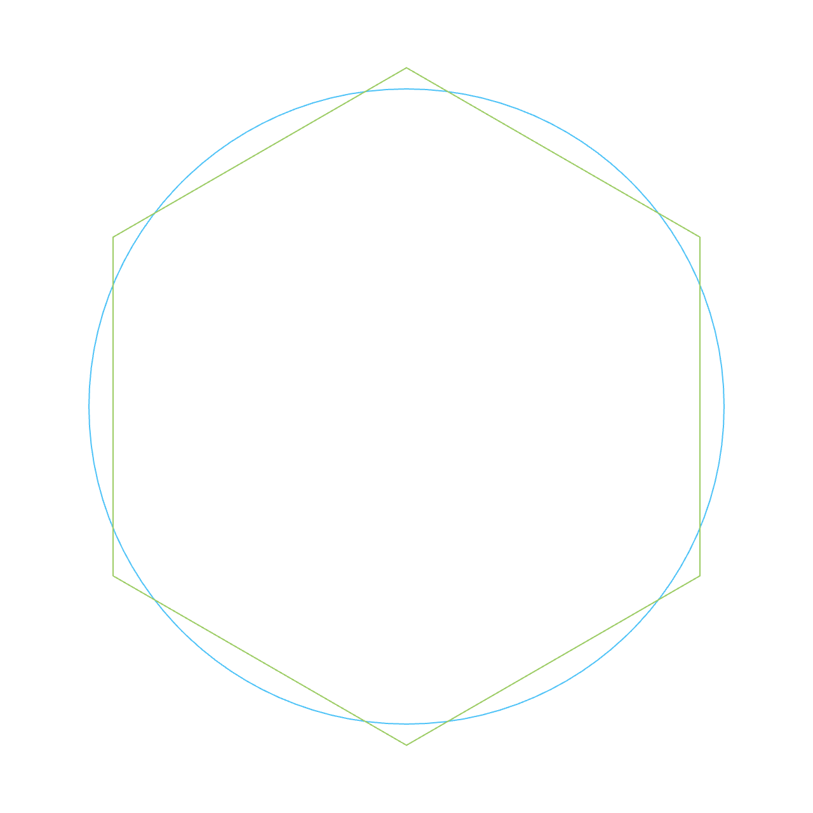
This is not optional; it is a geometric necessity. The only curve with its perimeter exactly equal to the circumference that never intersects its interior disk is the circle itself.
The bisection procedure guarantees that each new perimeter is smaller than the previous one.
Archimedes assumes tangency and externality persist at every finite step — even when the perimeter has become extremely close to the (unknown) circumference.
But whether the new polygon remains tangent depends on whether its perimeter is still sufficiently greater than the circumference.
The standard argument claims the polygons remain outside forever at finite n and only collapse into the circle at infinity. But this is circular reasoning. To know if the polygons are still circumscribed at every finite step, you must already know if the perimeter is large enough that no crossing occurs.
Yet finding the circumference is the purpose of the method. The method therefore relies on the very assumption it seeks to prove.
You cannot use the method to justify the assumption that makes the method valid.
The breakdown is visible at small finite n when C = 6.4r.
The area–square construction gives the true value.
The quadrant-to-square rearrangement with uncovered area = total overlap area yields a square of area exactly 3.2r².
Since the four quadrants are the original pieces of the circle, the circle area is exactly 3.2r².
Differentiating with respect to radius gives circumference exactly 6.4r.
This is not an approximation; it follows directly from finite geometric construction.
This finite construction avoids the infinite-regress trap entirely.
The flaw in the classical method becomes even clearer when we try to implement it practically.
When attempting to draw a circumscribed 24-gon or 48-gon via exact angle bisection (central angle 15° → 7.5°), the tangent lines merge, overlap, or cross the arc — even in high-precision vector software. The individual sides become indistinguishable or intersect the circle before reaching distinct tangent points.
This is not a precision or rendering error; it is the geometry refusing to produce a valid set of external tangents.
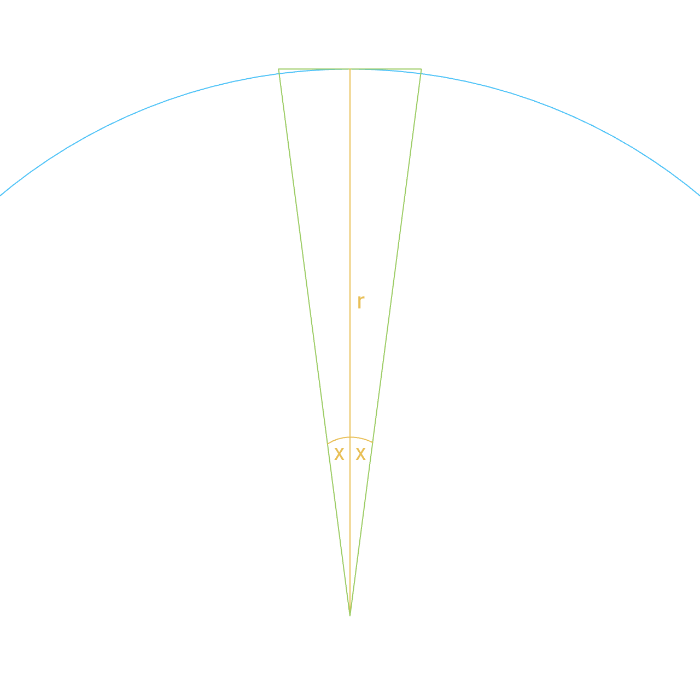
A circumscribed n-gon has perimeter:
P(n) = n × tan(180° / n).
Evaluating:
- P(12) = 12 × tan(15°) ~ 6.43r
- P(24) = 24 × tan(7.5°) ~ 6.319r
If the true circumference is 6.4r, then:
- the 12‑gon can still be circumscribed,
- but the 24‑gon cannot, because a circumscribed polygon must always satisfy P(n) > C.
The construction no longer produces a proper set of distinct tangent sides — it fails in a literal, physical sense. The required tangent lines from adjacent vertices converge so sharply that they overlap or intersect the arc before reaching distinct tangent points.
The figure collapses: instead of clear external tangents, the tangent lines for a 24‑gon or 48‑gon merge, overlap, or cut through the circle, behaving like an isoperimetric polygon rather than a circumscribed one.
The assumption “we can always bisect again and obtain another circumscribed polygon” fails constructively — at a small, finite number of sides, not only in some unreachable infinite limit.
The Consequence
Once the perimeter of the constructed polygon falls below the true circumference, the tangent‑doubling formulas no longer describe a real circumscribed polygon. They describe a figure that has already slipped inside the circle. The apparent convergence toward ~6.28r is therefore not a discovery of the pi, but an artifact of continuing a construction that has already become geometrically impossible.
The classical argument cannot prove that the polygon remains tangent, and without that proof, it cannot be used to refute the circumference C = 6.4r.
These structural issues in the polygon‑limit method set the stage for a second misconception: the symbolic fusion of an approximation with the geometric ratio it was meant to represent.
The Symbol π: A Linguistic Shortcut
Since the numeric result of Archimedes’ approximation was an infinite fraction — 3.14…— whose digits cannot all be written, he needed a symbolic notation for it in his formulas.
Technically, the circumference is a perimeter. So the perimeter‑to‑diameter ratio — P / d — became pi over delta in Greek. With the diameter chosen as the reference — d = 1 —, this simplifies to pi / 1 = pi.
But this is not necessarily the ratio itself — it is the notation of that ratio. That distinction matters.
The circumference‑to‑diameter ratio is a universal geometric proportion.
The numeric value commonly associated with it — 3.14…— is the result of Archimedes’ polygon‑based approximation method.
This is how a numerical output of a failed computational estimate gradually hardened into a symbol, and the symbol into a “geometric constant.”
Over time, the numerical result of Archimedes’ polygon‑limit procedure was reinterpreted as a fundamental property of the circle itself.
It was not until the 18th century that the symbol, popularized by the mathematicians of the time, gained widespread acceptance, meanwhile it took on a life of its own.
∫ Calculus: Summary, Not Source
Over the centuries, many mathematicians introduced increasingly sophisticated formulas to estimate the circle’s circumference. These formulas all rely on the same conceptual model: a theoretical polygon with an infinite number of sides.
When analytic geometry and calculus were developed, they absorbed the inherited circle constant directly into their definitions — especially through the power‑series expansions of sine and cosine. This cemented the number as a foundational constant, even though its original source was an approximation method with hidden geometric limitations.
Despite their variety, all such approximation methods share two essential features:
- They estimate the perimeters of polygons with their number of sides approaching infinity.
- They rely on the unproven and actually false premise that repeated angle bisection of a circumscribed polygon always produces another circumscribed polygon.
Modern calculus compresses these ideas into elegant notation, such as:
But calculus is not a source of truth.
There are many different calculus methods, but ultimately all of them are compact notations of a set of basic operations — addition, subtraction, multiplication, division — and inherit whatever assumptions those operations rest on.
Each and every notation in the formula should correspond to a real, logical property of the circle.
Yet upon inspection, inconsistencies emerge.
Calculus may be a useful mathematical tool, but calling it exact is a bold claim.
It can be exact with exact limits and certain operations, but if those are given then they can be calculated directly without calculus.
When calculus is treated as a magical shortcut rather than a summary of underlying logic, it hides the very reasoning it is supposed to express.
These formulas don’t derive the circumference from first principles; they assume it.
φ The Golden Ratio
Some relate the numeric value of 3.14… to the so-called “golden ratio” of ( √5 + 1 ) / 2.
This equation has no logical ties to the area nor the circumference of a circle.
The golden ratio of ( √5 + 1 ) / 2 is irrelevant to the definition of these properties.
The Cognitive Risk of flawed geometric Axioms.
The central concern arises from the potential cognitive harm caused by teaching the approximate, irrational constant pi as an absolute truth in foundational geometry.
1. The Flawed Foundation
The Problematic Axiom: The conventional geometric curriculum requires students to accept that the constant for circle area — A = pi × r² — is both exact and unreachable/irrational, because it is derived from the error-prone polygon approximation method (Archimedes).
2. The Cognitive and Pedagogical Impact
The warning is that teaching the inconsistency of the pi as a fundamental truth may negatively affect a student's cognitive development:
Creates Cognitive Dissonance: It forces the brain's pattern-recognition systems to accept a conflict: an "absolute" constant that is fundamentally imperfect and inconsistent with the true basis of area — the square.
Hinders Logical Consistency: It teaches students that in mathematics, the search for perfect, elegant logical consistency can be abandoned in favor of memorizing an approximate rule.
Inhibits Whole-Brain Synchronization: It potentially creates a disconnect between the brain's visual/spatial centers — which recognize the geometric imperfection — and its analytical centers — which are forced to accept the numerical approximation —, leading to poor integration of geometric understanding.
The final conclusion is that using the consistent, exact constant 3.2 offers a path to a more coherent and structurally sound foundation for geometric thought, thereby avoiding the introduction of a fundamental logical flaw into developing minds.
The true Ratio: 3.2
Historical records suggest that a legislative process took place in 1897, Indiana, USA, known as House Bill 246 ( sometimes listed as 264 ), or Indiana Pi Act, aiming to replace the numeric value 3.14 by 3.2.
Unfortunately, the exact details of the proposed method in the Indiana Pi Bill are somewhat obscure and have been interpreted differently by various accounts.
The pi has served its symbolic purpose. But in geometry, clarity matters more than tradition.
The pi is a fundamental constant in the geometry of abstract circles and plays a crucial role in many mathematical theories.
However, using geometric construction and algebraic simplification we find that when we move from these abstractions to the measurement of real objects, a slightly different constant, 3.2 emerges as more relevant for accurately describing their properties.
The pi is just a failed, primitive approximate.
The solution (CGS): The Core Geometric System™ (CGS) provides a logically self-consistent alternative where the area constant is the rational number 3.2 — A = 3.2r² —, derived from an algebraically proven Area Balance Axiom with the square.
By focusing on area relationships and direct comparisons between shapes, these methods emphasize a more intuitive and potentially more fundamental understanding of geometric concepts.
These values are exact, rational, and logically derived. They can be verified numerically, but more importantly, they can be proven algebraically — without relying on infinite fractions, symbolic shortcuts, or flawed assumptions.
Since the true ratio is exactly 3.2, and that is a rational number, then we can — and should — write it as it is. Let the pi remain in the history books. Geometry deserves better.
That makes the arc value of 360° = 6.4radian, and trigonometric functions that rely on arc value have to be aligned to 3.2 respectively.
The widely used formula " A = pi × r² " is not a direct result of calculus. It’s multiplying the approximate circumference formula C = 2pi × r by half the radius, treating the area as the sum of infinitesimal rings. While that method is algebraically valid, it relies on the approximate circumference and bypasses the geometric logic that defines area: the comparison to a square.
In the quadrant layout when the overlapping area equals to the uncovered area in the middle, the sum of the areas of the quadrants is equal to the area of the square. That square represents the area of the circle in square units.
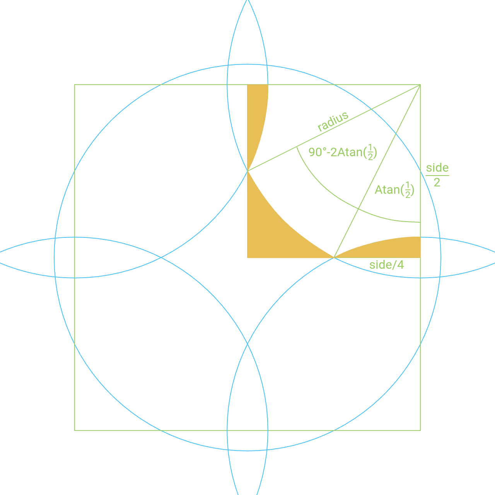
The equation can be simplified algebraically.
Dividing both sides by 3.2r² :
Simplifying further by adding 1/8 :
Substituting 90° / 360° for 1 / 4 :
Simplifying further:
Which is equivalent to 1 = 1 .
Uncovered area = overlapping area
This is an identity; not tautology.
Circle area = square area
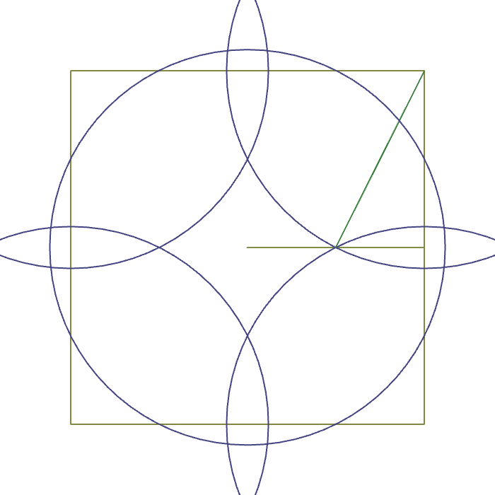
The " V = 4 / 3 × pi × radius³ " formula is widely used for the volume of a sphere.
It was approximated by comparing a hemisphere to the difference between the approximate volume a cone and a circumscribed cylinder.
That is a very exaggerated, distortion-based comparison that discards the difference between the straight slant height of a cone and the curvature of a sphere, resulting in a very rough underestimate.
The volume of a cone is conventionally approximated as base × height / 3. While that is a reasonable approximation, the exact ratio is 1 / √8.
The 1 / 3 coefficient was likely estimated based on the observation that the mid-height cross-sectional area of a cone is exactly a quarter of a circumscribed cylinder's with the same base and height.
That makes the ratio between the mid-height cross-sectional area of the cone, and the difference between the mid-height cross-sectional areas of the circumscribed cylinder and the cone 1 : 3 .
That is a logical consequence of its equilateral triangular cross-section.
But this ratio can't be generalized for the overall volume of the cone.
The volume of a pyramid is conventionally approximated as base × height / 3. While that is a reasonable approximation, the exact ratio is 1 / √8.
A common method aiming to prove the pyramid volume formula "V = base × height / 3" involves dissecting a cube into three pyramids. Here’s how it’s typically presented:
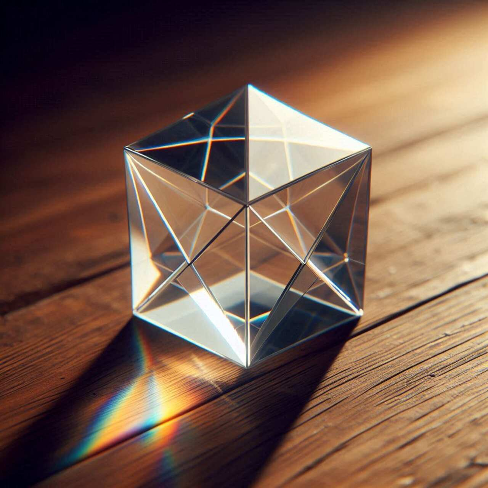
Take a cube with an edge length of ( e ).
Volume of the cube: V = the cubic value of e.
Imagine dividing the cube into three square pyramids, each with:
- Base: One face of the cube, so the base area is the square value of e .
- Height: The edge of the cube, ( e ), since the apex of each pyramid is the cube’s vertex opposite the base, depending on the dissection.
A common dissection:
Choose one vertex of the cube as the apex.
Form three pyramids, each with this apex and a base on one of the three faces adjacent to that vertex.
Each pyramid has a base area of the square value of e, and height ( e ) (the distance from the apex to the base plane).
Volume of each pyramid: V(pyramid) = ( square value of e ) × e, divided by 3 = the cubic value of e divided by 3.
Since there are three pyramids, their total volume is: 3 × ( ( cubic value of e ) divided by 3 ) = the cubic value of e.
This equals the cube’s volume, suggesting the one third factor is correct.
The Vertex Problem is a critical flaw in this dissection when applied to a real, physical cube:
Vertex Assignment:
When we cut the cube into three pyramids sharing a common vertex as the apex, the geometry seems clean in theory. But if you physically slice the cube, you have to decide where that vertex belongs:
The cube has 8 vertices, each pyramid has 5. Three pyramids have 3 × 5 = 15 in total.
Each vertex of a real physical cube is a point that can't be split into 3 points without duplicating. The other way around, 3 vertices of the pyramids can't be merged into 1 without distortion.
If we dissect the cube, we need to designate each shared vertex to be a part of either one pyramid, or another.
Consequence:
The volume of each pyramid is exactly a third of the cube, but with a base smaller than the square value of e, and height shorter than e.
Their bases and heights are slightly adjusted due to the vertex assignment, undermining the proof’s simplicity.
If the solid pyramids'
- base is the square value of e,
and their
- height is e,
then the volume of each pyramid has to be larger than 1 / 3 × base × height, because 3 such pyramids can't form a cube with the same edge length, because their vertices and faces can't occupy the same space simultaneously.
The vertices are the most obvious examples, but the same is true for the edges, the diagonals and the inner faces.
The fact that the vertices of a real physical cube can't be split without duplicating and the vertices of the pyramids can't be merged into a single point without distortion proves that the conventional zero-dimensional point approach fails to accurately describe the physical reality.
Thus, the "V = base × height / 3" formula, and its so-called "calculus-based proofs" are invalid.
By replacing the abstract, zero‑dimensional point with the square and the cube as the primary, physically relevant units of measurement, this framework defines the properties of shapes like the circle and sphere not through limits or approximations, but through their direct, rational relationship to these foundational units.
This restores geometry to its constructive roots and eliminates the analytic assumptions that distort real‑world measurements.
Additional resources